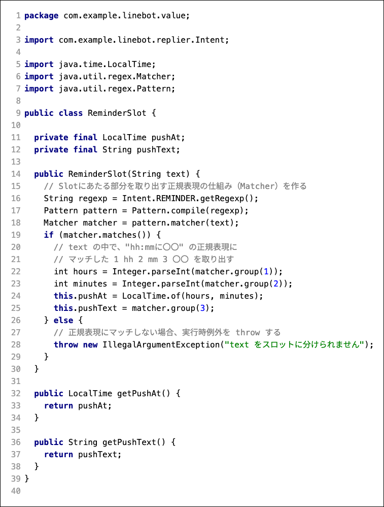
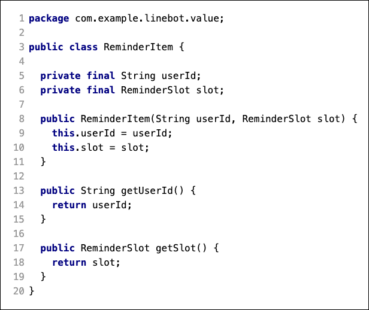

ここでは、 13:15に授業 などのように時間と用件をLINEBotに話しかけると、それをリマインダの登録要求として識別し、データベースに記録する部分を作成する。
まず、ユーザのメッセージから、ユーザが何を要求しているのかの意図（インテント）を識別する 必要がある。インテントを識別したら、メッセージから 要求を実行する条件（スロット） を分離し、これをもとに データベースに記録するデータ を作成する。さらに、 データベースのテーブルに記録 する。
例えば、 13:15に授業 というメッセージが送られてきたら、
- hh:mmに〇〇 というパターンのメッセージは、リマインダ登録のインテントだと判断する
- 時間 hh:mm と 用件 〇〇 をスロットとし、データベースに記録する
ポイント
- インテントをJavaの Enum(列挙型) で定義 する
- インテントの識別は、初歩的な方法として 正規表現で識別する仕組み にする
- 送信されたメッセージ正規表現パターンを比較し、インテントを識別 する
- インテントを識別したメッセージから スロット（時間と用件）を抽出し、データベースのテーブルに記録するためのデータを作る （ReminderService）
- LINEBotの制御にも使っている Spring フレームワークの機能で、テーブルを作成し、テーブルにデータを記録する （ReminderRepository）
このChatBotで識別できるインテントを定義する。
Javaでは、システム内で変わらない定義や定数に Enum （列挙型）と呼ばれる特別なクラスを使う。
Enum を作成する
com.example.linebot.replier パッケージの中に、 Intent Enum を作る。
IntelliJ IDEA では、クラス作成時に 列挙型（Enum） を選べば良い。

作成されるIntent Enumは以下のようになる。通常、 public class XXXX と書くところが、public enum XXXX になっていることに注目。

Intent Enum の内容を次のように書き換える。
クラス図

ソースコード

ポイント
^(\d{1,2}):(\d{1,2})に(.{1,32})$ は、13:15に授業、 16:55にバス などのように、hh:mmに〇〇 という文字列かどうか識別するための正規表現パターンである。
- hh, mm は最大2文字の数字。〇〇は最大32文字の文字列を想定
- 文字列のパターンに当てはまれば、メッセージが「リマインダを登録したい」インテントだと判断する(
REMINDERを使う) - 文字列のパターンに当てはまらない時は、別のインテントだと判断する（
UNKNOWNを使う） - Javaコードでは \ が一つ増える:エスケープすることに注意
whichIntent メソッドは static メソッド のため、インスタンス化しなくても呼び出せる （詳しくは次ページ）。
Classroom に commit / push
ここまで作成できたら、git（Windowsの方はgit bash, macOSの方はターミナルなど）を使い、Classroom に push しましょう。
git commit -m "課題4-3まで完了"
git push
Callbackクラスの handleMessage メソッドで、メッセージとIntentを使った識別を行う。
Callback クラス に Intent Enum の import に加える

Callback クラスの handleMessage メソッドの中身を書き換える
Callback クラスの handleMessage メソッドの中身を書き換える。
これまでの処理はコメントアウトして残しておいても良いし、削除して画像と同じように置き換えても良い。
ポイント
- 変更前は、送信された text を使ったswitch文で、返答内容に使うクラスを切り替えていた
- 変更後は、Intentクラスの static メソッドである
Intent.whichIntent(text)を実行して、textのパターンから Intent (つまり、REMINDERorUNKNOWN) を得る- static メソッドは、インスタンス化(new)せずに、クラス名.メソッド名 で利用する。
- さらに、switch 文の引数を
String textからIntent intentに切り替えたことで、 intent =REMINDERの時と、UNKNOWNの時で、処理が切り替わるようになった（つまり、Intentの識別 になった）
動作確認
LINEBot としてプログラムを起動し、 13:15に授業 や、 こんにちは などを送信してみる。
Classroom に commit / push
git commit -m "課題4-4まで完了"
git push
ここまでの課題で、インテントは識別できるようになったが、そのインテントをどの様な条件（スロット）で実行すれば良いのかはメッセージから抽出できていない。このパートではこの部分を解決する。
Slotを抽出するクラスを作成する
com.example.linebot.value パッケージを作成し、その中に ReminderSlot クラスを作成する。
コードが長いので、 InteliJ IDEA の コード補完機能 を活用して作ると少し楽になります。
ReminderSlotのクラス図

ソースコード

ポイント
作成した ReminderSlot クラスの中身と見比べてみましょう。
- 13:15に昼食 という文字列を例にすると、時間（13:15）と用件（昼食）をスロットと捉える。
- 時間:
pushAt, 用件:puthTextをフィールド変数で管理する - 引数つきコンストラクタに text で文字列を渡すと、正規表現を使って、以下の部分を文字列から抜き出す
- 13 の部分の文字列を抜き出し、整数型の hour とおく
- 15 の部分の文字列を抜き出し、整数方の minutes とおく
- 13, 15 を使って、時間を表す
LocalTime型のインスタンスを作る（pushAtフィールド変数で参照する） - 昼食 の部分の文字列を抜き出し、
pushTextフィールド変数で参照する
- もし、正規表現にマッチしない（スロットに抽出できない）text が引数に渡された場合は、例外を throw する
getPushAt(),getPushText()メソッドで、外部からメソッドの参照を取得できる
Classroom に commit / push
git commit -m "課題4-5までs完了"
git push
抽出したスロットの情報も含めて、データベースのテーブルに記録するデータを作る。
com.example.linebot.value パッケージの中に ReminderItem クラスを作成する。
ReminderItemのクラス図

ソースコード

このクラスは、単なる値の格納用のクラスである。
フィールドに、先ほどを作成した ReminderSlot をコンポジションしていることに注意。
Classroom に commit / push
git commit -m "課題4-6まで完了"
git push
これはリマインダーの主要な処理になるので、Spring フレームワークで @Service のクラスを作り、この中でスロットの分離の処理を作成する。
前準備
com.example.linebot.service パッケージを作成し、その中に ReminderService クラスを作成する。